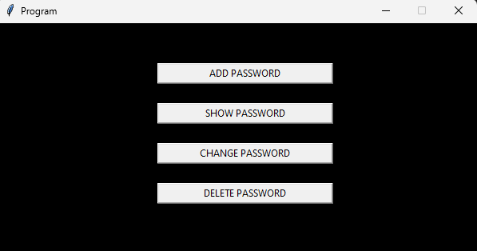

Aqui estão alguns dos meus principais projetos em que tenho orgulho de compartilhar

O presente projeto foi desenvolvido com o propósito de apresentação do Trabalho de Conclusão de Curso (TCC) relacionado à segurança no ambiente digital. Com base em pesquisas realizadas na instituição educacional em que estudei, constatou-se que muitas pessoas enfrentavam dificuldades em criar e gerenciar senhas distintas, resultando frequentemente em esquecimentos. Diante dessa problemática, decidi conceber um aplicativo que visa solucionar essa questão.